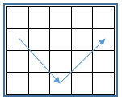

Có thể xem một bàn bi da là một hình chữ nhật có kích thước n x m ô vuông (n dòng, m cột). Các dòng được đánh số từ trên xuống dưới theo thứ tự từ 1 đến n, các cột được đánh số từ trái sang phải theo thứ tự từ 1 đến m. Có một trái bi da đang nằm ở dòng y cột x. Ban đầu trái bi được đánh theo đường chéo và sẽ lăn từ ô (y, x) sang ô (y+1, x+1) rồi sang ô (y+2, x+2) v.v... Khi gặp băng (cạnh hình chữ nhật), trái bi da sẽ phản xạ lại theo quy tắc vật lý. Ví dụ, giả sử trái bi đang ở ô (n, i) và dự kiến lăn sang ô (n+1, i+1), tuy nhiên vì dòng n+1 là băng nên trái bi sẽ phản xạ lại sang ô (n-1, i+1) như hình dưới. Quy tắc vật lý như vậy được áp dụng tương tự cho các băng và các chiều lăn bi còn lại (kể cả góc).

Giả sử ban đầu trái bi được đánh với một lực k, nghĩa là trái bi sẽ lăn k ô rồi dừng lại (không tính ô xuất phát). Hãy tìm vị trí ô (yd, xd) mà trái bi sẽ dừng lại.
Dữ liệu nhập:
- Là các số nguyên n, m, y, x, k mỗi số cách nhau một khoảng trắng (2 ≤ n, m ≤ 1000, 1 ≤ y < n, 1 ≤ x < m, 1 ≤ k ≤ 1012).
Dữ liệu nhập:
- Là 2 số nguyên yd, xd cách nhau một khoảng trắng. (yd, xd) là vị trí ô mà trái bi dừng lại.